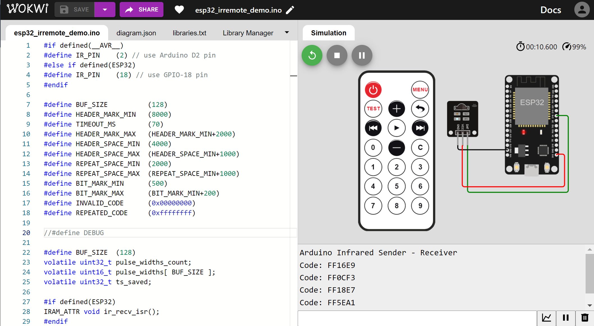
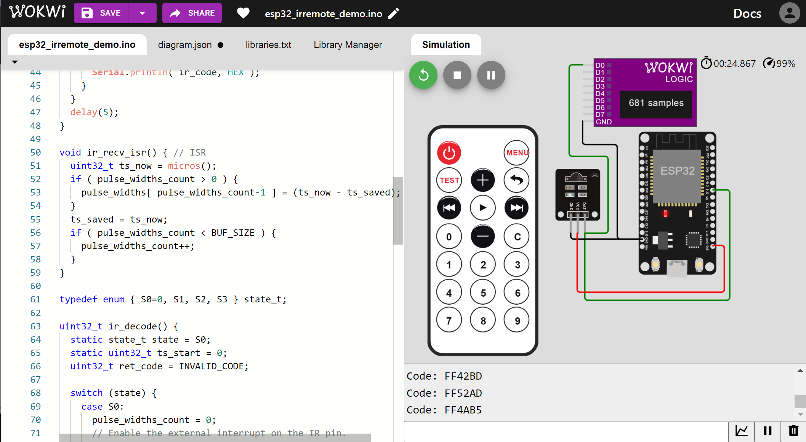
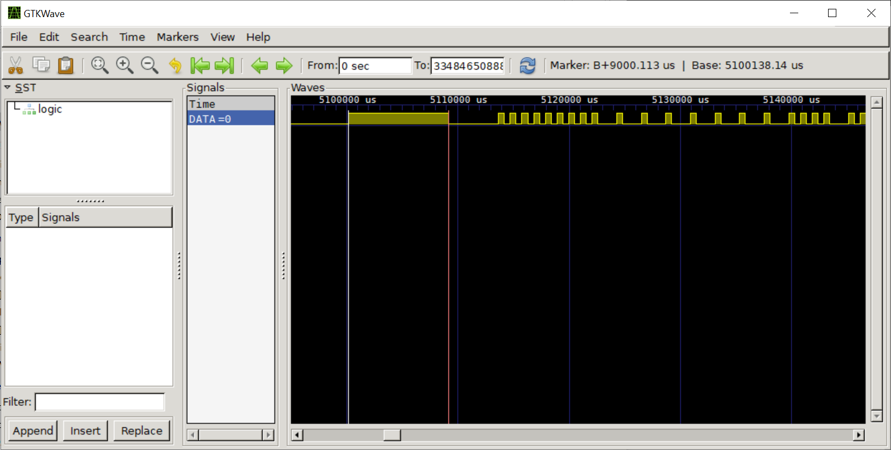
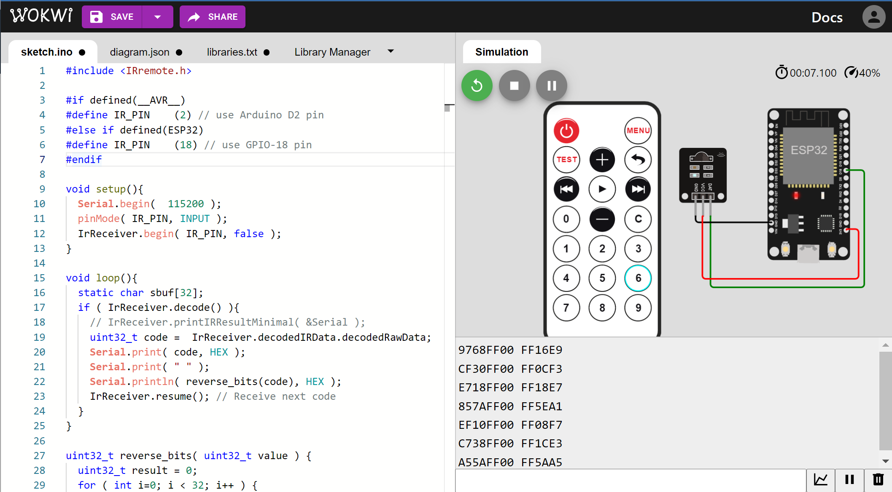
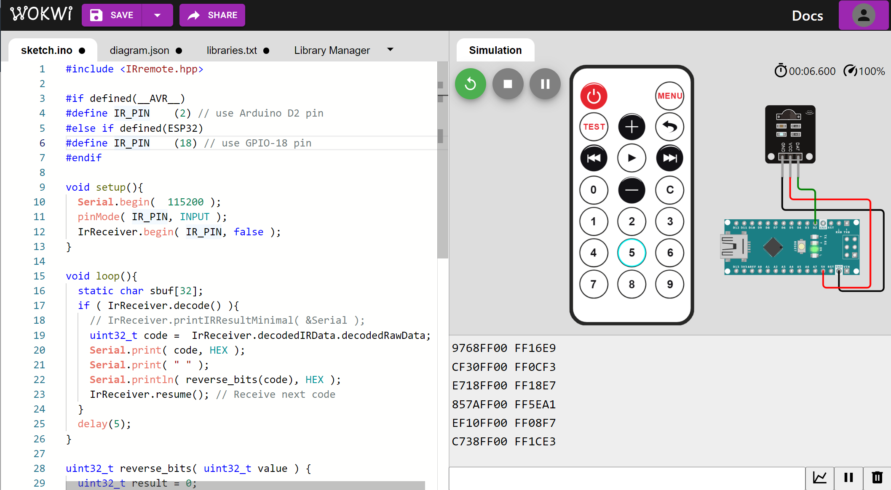

การใช้งานโมดูลรีโมตตัวส่งและตัวรับแสงอินฟราเรดเป็นอุปกรณ์ควบคุมแบบไร้สาย#
▷ การสื่อสารข้อมูลด้วยแสงอินฟราเรด#
บทความนี้นำเสนอการใช้งานอุปกรณ์ตัวรับและตัวส่งสัญญาณแสงอินฟราเรดและเขียนโปรแกรมด้วย Arduino สำหรับบอร์ดไมโครคอนโทรลเลอร์ เช่น Arduino Nano และ ESP32
การสื่อสารข้อมูลด้วยแสงอินฟราเรด (Infrared Data Communication: IrDA) ประกอบด้วยสองส่วนที่สำคัญคือ ตัวส่ง (IR Transmitter) และตัวรับแสงอินฟราเรด (IR Receiver) โดยทั่วไปแล้ว ตัวส่งแสงอินฟราเรดจะส่งข้อมูลออกไปทีละบิตโดยใช้คลื่นแสง แต่จะต้องมีการมอดูเลตสัญญาณ (เรียกว่า Pulse-Code Modulation หรือ PCM) ด้วยสัญญาณพัลส์หรือสัญญาณพาหะที่มีความถี่ เช่น 36kHz, 38kHz หรือ 40kHz (Carrier Frequency หรือ PCM Frequency) แล้วแปลงสัญญาณไฟฟ้าให้เป็นแสงอินฟราเรดโดยใช้ IR LED
รูปแบบการส่งข้อมูลด้วยแสงอินฟราเรดจะถูกกำหนดโดยโพรโตคอลของผู้ผลิตอุปกรณ์ เช่น NEC Protocol, Sony SIRC หรือ Philips RC5/RC6 Protocol เป็นต้น การส่งสัญญาณพัลส์จะมีช่วงเวลาจำกัด เช่น 600 usec สำหรับ NEC Protocol แล้วเว้นช่วงเวลาไว้ไม่มีการส่งสัญญาณ และขึ้นอยู่กับค่าของบิตที่ต้องการส่งในขณะนั้น เช่น 600 usec (บิตมีค่า 0) หรือ 900 usec (บิตมีค่า 1) ก่อนส่งบิตถัดไปตามลำดับ
สัญญาณแสงอินฟราเรดที่ไปถึงตัวรับ จะถูกแปลงให้เป็นสัญญาณไฟฟ้าด้วยวงจรที่มีโฟโต้ไดโอด (PIN-type Photodiode) วงจรขยายสัญญาณ (Amplifier) และถูกกรองตามความถี่ของสัญญาณพาหะด้วยวงจรตัวกรอง (Bandpass Filter) ก่อนจะถูกแปลงให้เป็นสัญญาณดิจิทัลตามลำดับ
ตัวอย่างของไอซีตัวรับแสงอินฟราเรดที่ใช้กับความถี่ประมาณ 38kHz รับแสงอินฟราเรดได้ดีในช่วงความยาวคลื่นประมาณ 940 - 950 นาโนเมตร และสามารถใช้แรงดันไฟเลี้ยงได้ในช่วง 2.7V ~ 5.5V ได้แก่
- TSOP34438
- TSOP33538
- TSOP38238
- VS1838B
- TL1838
เอาต์พุตของตัวรับประเภทนี้ ถ้าไม่ได้รับแสงอินฟราเรดจากตัวส่ง จะได้ค่าลอจิกเป็น High (Logic 1) แต่ถ้าได้รับแสงอินฟราเรดความถี่ 38kHz จะได้เอาต์พุตเป็น Low (Logic 0) ดังนั้นเอาต์พุตจึงทำงานแบบ Active-Low
รูป: แผนผัง Block Diagram แสดงองค์ประกอบภายในที่สำคัญของ TSOP34438 (Source: Vishay)
รูป: ตัวอย่างการสร้างสัญญาณทดสอบและสัญญาณเอาต์พุตของวงจรที่ใช้ตัวรับ TSOP34438 (Source: Vishay)
ตัวส่งทำหน้าที่สร้างสัญญาณไฟฟ้าแบบ Pulse Burst เป็นรูปคลื่นสี่เหลี่ยมด้วยความถี่ 38kHz (มีค่า Duty Cycle 33% สำหรับ NEC Protocol) แล้วส่งเป็นสัญญาณอินฟราเรด
การส่งข้อมูลจะเริ่มด้วยสัญลักษณ์ที่เรียกว่า Mark และ Space ตามลำดับ สำหรับช่วงแรกหรือ เรียกว่า "ส่วนหัว" (Head) ซึ่งจะมีช่วงความกว้างตามที่โพรโตคอลสื่อสารกำหนดไว้ จากนั้นจะตามด้วย Mark และ Space สำหรับข้อมูลบิต และใช้ความกว้างเป็นตัวกำหนดว่า บิตใดมีค่าเป็น 0 หรือ 1
- ช่วงแรกเรียกว่า Mark มีลักษณะเป็น Pulse Burst ระยะเวลาจำกัด และเมื่อตัวรับได้รับสัญญาณดังกล่าวในช่วงเวลานั้น จะได้เอาต์พุตเป็นลอจิก 0 (Low)
- ช่วงถัดไปให้หยุดส่งคลื่นแสงอินฟราเรด ช่วงนี้เรียกว่า Space ไม่มีสัญญาณอินฟราเรด เอาต์พุตของตัวรับจะได้เป็นลอจิก 1 (High)
ช่วง Mark สำหรับบิตข้อมูล 0 และ 1 จะเท่ากัน แต่ช่วง Space ของบิต 1 จะกว้างกว่าของบิต 0
รูป: การส่งข้อมูลบิตด้วยแสงอินฟราเรดตามโพรโทคอลของ NEC (Source: NXP)
รูป: สัญญาณตัวส่งและสัญญาณที่ตัวรับ (Source: Adafruit)
รูปต่อไปนี้แสดงให้เห็นตัวอย่างรูปแบบของการส่งข้อมูลทั้งหมด 32 บิต โดยใช้โพรโตคอลของ NEC และจะเห็นได้ว่า ในรูปคลื่นสัญญาณดิจิทัลที่ตัวรับ (เป็นแบบกลับค่าลอจิกให้แล้ว) ช่วงแรกเป็น Mark และ Space สำหรับ Head มีความกว้าง 9 msec และ 4.5 msec (โดยประมาณ) ตามลำดับ ถัดไปจึงเป็นข้อมูลบิต
- ช่วง Mark สำหรับข้อมูลบิต มีความกว้าง 562.5 μsec
- ช่วง Space สำหรับบิต 0 มีความกว้าง 562.5 μsec และสำหรับบิต 1 มีความกว้างประมาณ 1687.5 μsec
ถ้าหากกดปุ่มของรีโมตอินฟราเรดค้างไว้ จะมีการส่งโค้ดซ้ำ (Repeat Code) และมีการเว้นระยะเวลา
รูป: ตัวอย่างสัญญาณดิจิทัลที่ตัวรับสำหรับข้อมูล 32 บิต และการส่งโค้ดซ้ำ
▷ ตัวอย่างโมดูลแสงอินฟราเรดสำหรับการทดลอง#
โมดูล KY-022 มีตัวรับ VS1838B มีคอนเนกเตอร์แบบ 3 ขา เป็น Pin Header คือ GND, VCC(+) และ S (Signal) ตามลำดับ และสามารถใช้แรงดันไฟเลี้ยง VCC เท่ากับ +3.3V หรือ +5V ได้ บนแผงวงจรของโมดูล มีวงจร LED (SMD) และตัวต้านทาน 1kΩ ต่ออยู่ระหว่างขา VCC กับขา S (Signal)

รูป: ตัวอย่างอุปกรณ์ตัวรับประเภทไอซี VS1838B (38kHz, 940 nm) (ซ้าย) และโมดูล Keyes KY-022 Infrared Receiver (ขวา) ที่มี VS1838B เป็นตัวรับ และมีตัวต้านทาน Pullup เชื่อมต่อระหว่างขาสัญญาณและขา VCC ไว้ให้แล้ว
ลองมาดูตัวอย่างการสร้างสัญญาณดิจิทัลในรูปแบบที่เรียกว่า Pulse Burst เป็นสัญญาณพัลส์ความถี่ 38kHz ที่มีจำนวนไซเคิลจำนวนหนึ่ง (เช่น 10 ไซเคิล) และสร้างซ้ำใหม่ ๆ ทุก 20 msec สัญญาณนี้จะถูกนำไปใช้ในการขับวงจร IR LED เพื่อสร้างแสงอินฟราเรดที่ตัวส่ง และมีโมดูล KY-022 (VS1832B IR Reciever) เป็นตัวรับแสง
รูป: เครื่องสร้างสัญญาณ (Function Generator) และออสซิลโลสโคป (Oscilloscope) ที่ใช้ในการทดลองวัดสัญญาณ
รูป: โมดูลตัวส่งแสงอินฟราเรดที่ใช้สัญญาณแบบ Pulse Burst จาก Function Generator และโมดูลตัวรับแสง
สัญญาณที่วัดได้ด้วยเครื่องออสซิลโลสโคป มีลักษณะดังนี้ สัญญาณช่อง 1 เป็นสัญญาณ Pulse Burst จาก Function Generator และสัญญาณช่อง 2 เป็นสัญญาณเอาต์พุต S จากโมดูล KY-022

รูป: การวัดสัญญาณด้วยออสซิลโลสโคปสำหรับ Pulse Burst (10 Cycles)

รูป: การวัดสัญญาณด้วยออสซิลโลสโคปสำหรับ Pulse Burst (20 Cycles)
สัญญาณเอาต์พุต S จากโมดูล KY-022 มีระดับลอจิกเป็น High ในสถานะปรกติ และจะเปลี่ยนจาก High เป็น Low (ทำงานแบบ Active-Low) เมื่อได้รับแสงอินฟราเรด 38kHz แต่จะไม่เกิดขึ้นทันที มีการหน่วงเวลาประมาณ 200 usec (ไมโครวินาที)
หากลองต่อวงจรโดยใช้โฟโต้ทรานซิสเตอร์แสงอินฟราเรด (IR Phototransistor) เช่น การต่อวงจรแบบ Common-Emitter ร่วมกับตัวต้านทาน (4.7kΩ) เปรียบเทียบกับการใช้ไอซีตัวรับแสงอินฟราเรด เช่น VS1838B แล้ววัดดูสัญญาณเอาต์พุต จะเห็นได้ว่า สัญญาณเอาต์พุตที่ได้จาก VS1838B เป็นสัญญาณดิจิทัลที่เหมาะสำหรับนำไปใช้กับไมโครคอนโทรลเลอร์มากกว่า มีความไวต่อการรับแสงอินฟราเรด (มอดูเลตด้วยความถี่ 38kHz) ได้ดีกว่า ระยะห่างระหว่างตัวรับและตัวส่งก็มีผลต่อสัญญาณเอาต์พุตของวงจรที่ใช้โฟโต้ทรานซิสเตอร์แสงอินฟราเรดด้วยเช่นกัน
รูป: โฟโต้ทรานซิสเตอร์แสงอินฟราเรด และตัวอย่างการต่อวงจร
รูป: การทดลองต่อวงจรรับแสงอินฟราเรดจากโมดูลตัวส่ง โดยใช้โฟโต้ทรานซิสเตอร์

รูป: เปรียบเทียบสัญญาณ (ช่อง 1) จากวงจรโฟโต้ทรานซิสเตอร์แสงอินฟราเรด และสัญญาณ (ช่อง 2) จากตัวรับอินฟราเรด VS1838B เมื่อได้รับแสงอินฟราเรดจากอุปกรณ์รีโมตคอนโทรล
ตัวอย่างอุปกรณ์ที่มีการทำงานโดยใช้แสงอินฟราเรด และมีราคาไม่แพง มีดังนี้
รูป: ตัวอย่างอุปกรณ์ตัวรับและตัวส่ง
รูป: ตัวอย่างอุปกรณ์รีโมตอินฟราเรดที่มีปุ่มกด (NEC Protocol, CR2025/160mAH coin-cell battery)
ถ้าต้องการต่อวงจรตัวส่งแสงอินฟราเรด ก็อาจจะใช้ IR LED ร่วมกับตัวต้านทานจำกัดกระแส เช่น TSAL6200 / TSAL6400 High Power Infrared Emitting Diode (940 nm, Vf=1.35V, If=100mA max.) แต่จะต้องมีการมอดูเลตสัญญาณด้วยความถี่ 38kHz ด้วย
อย่างไรก็ตาม ถ้านำไปใช้กับขา GPIO ของไมโครคอนโทรลเลอร์ โดยทั่วไปแล้ว ขา GPIO จะมีข้อจำกัดในการจ่ายหรือรับกระแส เช่น ในระดับ 10mA เป็นต้น (ขึ้นอยู่กับชิปไมโครคอนโทรลเลอร์ที่นำมาใช้งาน)
ถ้าให้ VCC=5V และมีตัวต้านทานนำมาต่ออนุกรม 220 Ω ก็สามารถคำนวณกระแสที่ใช้โดยประมาณ ได้ตามสูตรคำนวณดังนี้
แต่หากต้องการความสะดวกในการทดลอง ก็สามารถเลือกใช้โมดูลตัวส่งสัญญาณอินฟราเรด หรือ อุปกรณ์รีโมตอินฟราเรดที่มีปุ่มกดหลายปุ่มได้เช่นกัน โมดูลตัวส่งบางรุ่น มีวงจรทรานซิสเตอร์ NPN (เช่น 2N2222) ไว้สำหรับควบคุมการจ่ายกระแสให้ IR LED ซึ่งทำให้สามารถจ่ายกระแสได้สูงขึ้น แต่ส่วนใหญ่ก็จะใช้แค่ตัวต้านทานจำกัดกระแส เช่น 220 โอห์ม สำหรับนำไปใช้กับขา GPIO ของไมโครคอนโทรลเลอร์ และมีระยะในการรับส่งสัญญาณอินฟราเรด ก็จะได้ในระยะใกล้ ๆ เท่านั้น
ไฟล์เอกสารของผู้ผลิต / Datasheet Files (PDF)
▷ ตัวอย่างโค้ด Arduino#
โค้ดตัวอย่างต่อไปนี้ สาธิตการรับค่าอินพุตจากตัวรับสัญญาณอินฟราเรด และมีการเปิดใช้งานอินเทอร์รัพท์ที่ขา GPIO
(เช่น เลือกใช้ขา GPIO-18 ของ ESP32 หรือ D2 ของ Arduino Nano)
เมื่อมีการเปลี่ยนแปลงลอจิกของสัญญาณอินฟราเรดที่ขาอินพุต จะทำให้เกิดอินเทอร์รัพท์และมีการเรียกให้ฟังก์ชัน
ir_recv_isr() ทำงาน ดังนั้นจึงเป็นฟังก์ชันสำหรับ ISR (Interrupt Service Routine)
เมื่อเกิดเหตุการณ์อินเทอร์รัพท์ในแต่ละครั้ง จะมีการอ่านเวลาของระบบและคำนวณระยะเวลา
หรือ ผลต่างระหว่างสองเหตุการณ์ที่เกิดขึ้นตามลำดับ
บันทึกเป็นค่าตัวเลข (หน่วยเป็น ไมโครวินาที) ไว้ในอาร์เรย์ pulse_widths
ค่าตัวเลขนี้จะนำไปใช้ในการตรวจสอบและแปลงเป็นข้อมูลบิต
ตามโพรโทคอลของ NEC และจะได้รหัสตัวเลข 32 บิต
ฟังก์ชัน ir_decode() จะใช้สำหรับการตรวจสอบดูว่า ได้รับสัญญาณจากการกดปุ่มของอุปกรณ์รีโมตอินฟราเรดหรือไม่
และฟังก์ชันนี้จะต้องถูกเรียกซ้ำไปเรื่อย ๆ
#if defined(__AVR__)
#define IR_PIN (2) // use Arduino D2 pin
#else if defined(ESP32)
#define IR_PIN (18) // use GPIO-18 pin
#endif
#define BUF_SIZE (128)
#define HEADER_MARK_MIN (8000)
#define TIMEOUT_MS (70)
#define HEADER_MARK_MAX (HEADER_MARK_MIN+2000)
#define HEADER_SPACE_MIN (4000)
#define HEADER_SPACE_MAX (HEADER_SPACE_MIN+1000)
#define REPEAT_SPACE_MIN (2000)
#define REPEAT_SPACE_MAX (REPEAT_SPACE_MIN+1000)
#define BIT_MARK_MIN (500)
#define BIT_MARK_MAX (BIT_MARK_MIN+200)
#define INVALID_CODE (0x00000000)
#define REPEATED_CODE (0xffffffff)
#define DEBUG
#define BUF_SIZE (128)
volatile uint32_t pulse_widths_count;
volatile uint16_t pulse_widths[ BUF_SIZE ];
volatile uint32_t ts_saved;
#if defined(ESP32)
IRAM_ATTR void ir_recv_isr();
#endif
void setup() {
Serial.begin( 115200 );
Serial.println( F("Arduino Infrared Sender - Receiver") );
pinMode( IR_PIN, INPUT );
}
void loop() {
uint32_t ir_code = ir_decode();
if ( ir_code != INVALID_CODE ) {
if ( ir_code == REPEATED_CODE ) {
Serial.println( "Repeated Code" );
} else {
Serial.print( "Code: " );
Serial.println( ir_code, HEX );
}
}
delay(5);
}
void ir_recv_isr() { // ISR
uint32_t ts_now = micros();
if ( pulse_widths_count > 0 ) {
pulse_widths[ pulse_widths_count-1 ] = (ts_now - ts_saved);
}
ts_saved = ts_now;
if ( pulse_widths_count < BUF_SIZE ) {
pulse_widths_count++;
}
}
typedef enum { S0=0, S1, S2, S3 } state_t;
uint32_t ir_decode() {
static state_t state = S0;
static uint32_t ts_start = 0;
uint32_t ret_code = INVALID_CODE;
switch (state) {
case S0:
pulse_widths_count = 0;
// Enable the external interrupt on the IR pin.
attachInterrupt( digitalPinToInterrupt(IR_PIN),
ir_recv_isr, CHANGE );
state = S1;
break;
case S1:
if ( pulse_widths_count > 2 ) {
ts_start = millis();
state = S2;
}
break;
case S2:
if ( millis() - ts_start >= TIMEOUT_MS ) {
// Disable the external interrupt on the IR pin.
detachInterrupt( digitalPinToInterrupt(IR_PIN) );
uint32_t n = pulse_widths_count-2;
volatile uint16_t *p = pulse_widths;
if ( HEADER_MARK_MIN < p[0] && p[0] < HEADER_MARK_MAX ) {
if ( HEADER_SPACE_MIN < p[1] && p[1] < HEADER_SPACE_MAX ) {
// message header found
uint32_t code = 0;
for ( uint32_t i=2; i < n; i+=2 ) {
#ifdef DEBUG
Serial.print( p[i] );
Serial.print( ' ' );
Serial.println( p[i+1] );
#endif
if ( BIT_MARK_MIN < p[i] && p[i] < BIT_MARK_MAX ) {
code = (code << 1) | (p[i+1] > BIT_MARK_MAX);
} else { // bit timing error
code = INVALID_CODE;
break;
}
} // end-for
if ( code != INVALID_CODE ) {
ret_code = code;
}
}
else if ( REPEAT_SPACE_MIN < p[1] && p[1] < REPEAT_SPACE_MAX ) {
// repeated code found
ret_code = REPEATED_CODE;
}
}
state = S0;
}
break;
default:
state = S0;
}
return ret_code;
}
รูป: การทดลองตัวรับและตัวส่งสัญญาณแสงอินฟราเรดร่วมกับบอร์ด ESP32 และ Arduino Nano

รูป: ตัวอย่างข้อความเอาต์พุตที่ได้รับใน Arduino Serial Monitor
นอกจากการทดลองโดยใช้อุปกรณ์ฮาร์ดแวร์จริงแล้ว การทดสอบและสาธิตการทำงานของโค้ด ยังสามารถทำได้โดยใช้วิธีการจำลองการทำงาน เช่น การใช้ Wokwi Simulator บนหน้าเว็บเบราว์เซอร์

รูป: ตัวอย่างการจำลองการทำงานด้วย WokWi Simulator โดยเลือกใข้บอร์ด ESP32 DevKit ร่วมกับโมดูลตัวส่ง IR Remote และโมดูลตัวรับ IR Receiver

รูป: ตัวอย่างการจำลองการทำงานด้วย WokWi Simulator และบันทึกสัญญาณดิจิทัลลงในไฟล์ .vcd ด้วย Logic Analyzer เสมือนจริง

รูป: การแสดงสัญญาณดิจิทัลจากไฟล์ .vcd ด้วยโปรแกรม GTKWave
ถัดไปเป็นตัวอย่างการเขียนโค้ดและใช้ไลบรารีที่มีชื่อว่า "IRRemote" โดยจะต้องมีการติดตั้งไลบรารี ก่อนใช้งาน โดยใช้ Arduino IDE - Library Manager
รูป: การติดตั้งไลบรารี "IRremote"
#include <IRremote.hpp>
// see: https://github.com/Arduino-IRremote/Arduino-IRremote
#if defined(__AVR__)
#define IR_PIN (2) // use Arduino D2 pin
#else if defined(ESP32)
#define IR_PIN (18) // use GPIO-18 pin
#endif
void setup(){
Serial.begin( 115200 );
// Set IR receiver pin
pinMode( IR_PIN, INPUT );
// Start IR receiver
IrReceiver.begin( IR_PIN, false );
}
void loop(){
static char sbuf[32];
if ( IrReceiver.decode() ){
// IrReceiver.printIRResultMinimal( &Serial );
uint32_t code = IrReceiver.decodedIRData.decodedRawData;
Serial.print( code, HEX );
Serial.print( " " );
Serial.println( reverse_bits(code), HEX );
IrReceiver.resume(); // Receive next code
}
delay(5);
}
uint32_t reverse_bits( uint32_t value ) {
uint32_t result = 0;
for ( int i=0; i < 32; i++ ) {
result = (result << 1) | ((value >> i) & 1);
}
return result;
}

รูป: การจำลองการทำงานด้วย WokWi Simulator (ใช้บอร์ด ESP32)

รูป: การจำลองการทำงานด้วย WokWi Simulator (ใช้บอร์ด Arduino Nano)
▷ การใช้วงจร RMT ของ ESP32 สำหรับการรับสัญญาณจากรีโมตอินฟราเรด#
ชิป ESP32 มีวงจรภายในที่เรียกว่า
RMT (Remote Control Transceiver)
เหมาะสำหรับการส่งหรือรับชุดข้อมูลบิตด้วยแสงอินฟราเรด ตัวอย่างนี้สาธิตการใช้ฟังก์ชันที่ได้มีการประกาศไว้ในไฟล์
esp32-hal-rmt.h
เช่น rmtInit(), rmtSetTick(), rmtRead() เป็นต้น
เพื่อเปิดใช้งาน RMT Channel และอินเทอร์รัพท์ที่เกี่ยวข้องสำหรับการรับข้อมูลจากโมดูลอินฟราเรด
วงจร RMT จะทำหน้าที่ตรวจสอบดูว่า มีสัญญาณพัลส์เข้ามาหรือไม่ และให้วัดความกว้างของพัลส์ช่วงที่เป็น
Low และ High ตามลำดับ แล้วบันทึกลงในโครงสร้างข้อมูล (rmt_data_t)
#if !defined(ESP32)
#error "This Arduino sketch is targeted at ESP32."
#endif
#include "esp32-hal-rmt.h"
// https://github.com/espressif/arduino-esp32/blob/master/cores/esp32/esp32-hal-rmt.h
// Set the GPIO pin for IR receiver
#define IR_PIN (GPIO_NUM_18)
#define BUF_SIZE (128)
#define HEADER_MARK_MIN (8000)
#define TIMEOUT_MS (70)
#define HEADER_MARK_MAX (HEADER_MARK_MIN+2000)
#define HEADER_SPACE_MIN (4000)
#define HEADER_SPACE_MAX (HEADER_SPACE_MIN+1000)
#define REPEAT_SPACE_MIN (2000)
#define REPEAT_SPACE_MAX (REPEAT_SPACE_MIN+1000)
#define BIT_MARK_MIN (500)
#define BIT_MARK_MAX (BIT_MARK_MIN+200)
#define INVALID_CODE (0x00000000)
#define REPEATED_CODE (0xffffffff)
rmt_obj_t* rmt_recv = NULL;
uint32_t rmt_tick;
#define BUF_SIZE (128)
volatile uint32_t pulse_widths_count;
volatile uint16_t pulse_widths[ BUF_SIZE ];
IRAM_ATTR
void rmt_recv_data_callback( uint32_t *rmt_data, size_t len, void *arg ) {
rmt_data_t* data = (rmt_data_t*)rmt_data;
pulse_widths_count = 2*len;
if ( 0 < len && pulse_widths_count < BUF_SIZE ) {
for ( int i=0; i < len; i++ ) {
pulse_widths[2*i] = data[i].duration0; // low pulse width
pulse_widths[2*i+1] = data[i].duration1; // high pulse width
}
}
else { pulse_widths_count = 0; }
}
void setup() {
Serial.begin( 115200 );
delay( 1000 );
Serial.println( "\n\nESP32 - RMT IR Receiver Demo..." );
Serial.flush();
// Initialize the RMT channel to capture up to 192 items.
rmt_recv = rmtInit( IR_PIN, RMT_RX_MODE, RMT_MEM_192 );
if ( rmt_recv != NULL ) {
Serial.println( "Initialized RMT Receiver..." );
}
// Set RMT tick period (in usec): 1 usec.
rmt_tick = rmtSetTick(rmt_recv, 1000) / 1000;
Serial.printf( "RMT tick = %lu usec\n", rmt_tick );
// Set RMT receive filter.
rmtSetFilter( rmt_recv, true, 255 );
// Set RMT receiver threshold.
rmtSetRxThreshold( rmt_recv, 10000 / rmt_tick );
// Set RMT receiver callback.
rmtRead( rmt_recv, rmt_recv_data_callback, NULL );
}
void loop() {
uint32_t ir_code = ir_decode();
if ( ir_code != INVALID_CODE ) {
if ( ir_code == REPEATED_CODE ) {
Serial.println( "Repeated Code" );
} else {
Serial.print( "Code: " );
Serial.println( ir_code, HEX );
}
}
delay(5);
}
uint32_t ir_decode() {
uint32_t ret_code = INVALID_CODE;
int32_t n = pulse_widths_count-2; // 'n' must be an even number.
volatile uint16_t *p = pulse_widths;
if ( n <= 0 ) return ret_code;
if ( HEADER_MARK_MIN < p[0] && p[0] < HEADER_MARK_MAX ) {
if ( HEADER_SPACE_MIN < p[1] && p[1] < HEADER_SPACE_MAX ) {
// message header found
uint32_t code = 0;
for ( uint32_t i=2; i < n; i+=2 ) {
if ( BIT_MARK_MIN < p[i] && p[i] < BIT_MARK_MAX ) {
code = (code << 1) | (p[i+1] > BIT_MARK_MAX);
} else { // bit timing error
code = INVALID_CODE;
break;
}
} // end-for
if ( code != INVALID_CODE ) {
ret_code = code;
}
}
else if ( REPEAT_SPACE_MIN < p[1] && p[1] < REPEAT_SPACE_MAX ) {
// repeated code found
ret_code = REPEATED_CODE;
}
}
pulse_widths_count = 0;
return ret_code;
}
▷ แนวทางและกิจกรรมเรียนรู้เพิ่มเติม#
ตัวอย่างโจทย์และกิจกรรมฝึกปฏิบัติ โดยใช้อุปกรณ์อิเล็กทรอนิกส์สำหรับการสื่อสารข้อมูลด้วยแสงอินฟราเรด ได้แก่
- การวัดสัญญาณเอาต์พุตจากตัวรับ ด้วยเครื่องมือวัด เช่น ออสซิลโลสโคป (Oscilloscope) หรือเครื่องวิเคราะห์สัญญาณดิจิทัล (Logic Analyzer) และการบันทึกสัญญาณเพื่อวิเคราะห์ข้อมูลบิตที่ได้รับ แล้วลองวัดความกว้างพัลส์ของข้อมูลแต่บิตที่ได้รับ และแปลงเป็นค่าบิตของข้อมูล การตั้งค่าสำหรับ Trigger Type (เช่น Edge Type หรือ Pulse Type เป็นต้น) และ Trigger Mode สำหรับการทำงานของเครื่องออสซิลโลสโคปแบบดิจิทัล เพื่อคอยตรวจจับการเริ่มต้นของการรับสัญญาณ-บิตข้อมูล เป็นต้น
- การสร้างสัญญาณดิจิทัลเป็นอินพุตสำหรับตัวส่งสัญญาณแสงอินฟราเรด เช่น การสร้างสัญญาณด้วยเครื่องกำเนิดสัญญาณ (Function Generator) แบบดิจิทัล เช่น การสร้างสัญญาณแบบพัลส์เป็นชุด การทดลองเปลี่ยนความถี่ (เช่น ในช่วง 38kHz +/- 10kHz) ค่า Duty Cycle และจำนวนพัลส์ในการส่งข้อมูลในหนึ่งชุด และดูการเปลี่ยนแปลงที่สัญญาณเอาต์พุตที่โมดูลตัวรับแสงอินฟราเรด
- การทดลองเพื่อศึกษาดูว่า ระยะทางและทิศทางจากตัวส่งไปยังตัวรับแสงอินฟราเรด มีผลอย่างไรบ้าง ?
- การสร้างอุปกรณ์ตัวส่งสัญญาณอินฟราเรดเป็นรีโมตคอนโทรล โดยใช้ไมโครคอนโทรลเลอร์ แผงปุ่มกด (Keypad) วงจร Infrared LED และใช้แบตเตอรี่เป็นแหล่งพลังงานไฟฟ้า
- การเปรียบเทียบคุณสมบัติของเซนเซอร์แสงประเภทอื่น เพื่อดูว่า จะให้ผลต่างจากการใช้ไอซีหรือโมดูลตัวรับแสงอินฟราเรดโดยเฉพาะอย่างไร เช่น การเลือกใช้ LDR (Light-Dependent Resistor) และเซนเซอร์แสงอย่างเช่น TEMT6000 (Ambient Light Sensor) เป็นตัวรับสัญญาณแสงอินฟราเรด
- การเขียนโปรแกรมไมโครคอนโทรลเลอร์ เช่น Arduino สำหรับการรับสัญญาณและแปลงเป็นข้อมูลบิตหรือรหัสตัวเลขที่ส่งมาจากตัวส่ง หากไม่มีอุปกรณ์จริง ก็สามารถจำลองการทำงานของระบบได้เช่นกัน
- การรับสัญญาณจากรีโมตคอนคอนโทรลด้วยโมดูลรับแสงและประมวลผลด้วยบอร์ด ESP32 แล้วแปลงเป็นโค้ดตัวเลข และส่งข้อมูลเข้าไปยัง MQTT Broker ด้วย Wi-Fi สำหรับนำไปใช้กับระบบ Smart Home ที่ใช้ซอฟต์แวร์ Open Source เป็นต้น
▷ กล่าวสรุป#
บทความนี้ได้นำเสนอการใช้งานโมดูลตัวรับและตัวส่งสัญญาณอินฟราเรด การวัดสัญญาณไฟฟ้าที่ได้จากการทดลองใช้งานอุปกรณ์ และตัวอย่างการเขียนโค้ด Arduino Sketch สำหรับการทดลองใช้งานกับบอร์ดไมโครคอนโทรลเลอร์ ESP32 และ Arduino Nano หรือจำลองการทำงานด้วย WokWi Simulator บนหน้าเว็บเบราว์เซอร์
This work is licensed under a Creative Commons Attribution-ShareAlike 4.0 International License.
Created: 2022-10-20 | Last Updated: 2022-11-07